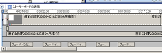

キャプチャー動画の作り方
画像の場合と比べるとキャプチャー動画の作り方は若干難しいですが、ネット上では無料の作成ツールがいくつか公開されています。
それらの無料ツールを使用しながら動画を録画し、ウィンドウズ付属の「Windows ムービー メーカー」などを使って加工すると、楽しみながら動画を作成することができます。
出来上がった動画は、ユーチューブなどにアップロードして公開し、さらにその動画を自分のブログやホームページに貼り付けるといい感じです。
カハマルカの瞳でキャプチャー動画の作り方
実際のキャプチャー動画の作り方ですが、「カハマルカの瞳」という無料ツールがとても使いやすいです。
このブログで公開しているキャプチャー動画は、すべてこの無料ツールを使わせてもらっております。
カハマルカの瞳の使い方は、ソフトウェアをダウンロードすると作者さまの説明書が付いてきますので、そちらの方をご覧になって見てください。
動画のサイズやキャプチャー範囲などを設定して、緑の目をした録画ボタンを押せば録画がはじまり、停止ボタンを押すと動画が自動的に保存されます。
キャプチャー画像の加工方法を動画で
動画の作り方の例として、「ペイントでのキャプチャー画像の加工方法に関する動画」を作成してみました。
結論からいうと、動画のできばえはこんな感じです。
キャプチャー動画の作り方手順
- キャプチャー動画の作成
- 作成した動画をムービーメーカーで加工
- ユーチューブへアップロード
- html タグを取得し、自分のブログに貼る
動画の作り方ですが、まず、「カハマルカの瞳」の設定する箇所としては、今回はペイント画像の加工方法を録画するので、キャプチャーする枠をペイントに設定して、動画のサイズを適当な大きさに設定してみました。
中ぐらいの 320×240 の大きさで設定でやってみました。
緑の瞳を押すと録画が始まりますが、ゆっくりめ動作でキャプチャーするといいようです。録画を停止したら、AVI というフォルダの中に動画が自動で作成されます。
さらに、この作成された動画を加工するには、ウィンドウズのデフォルトで入っている「Windows ムービー メーカー」を使うと加工しやすいです。
ムービーメーカーでキャプチャー動画の加工方法
Windows ムービー メーカーを使って、キャプチャー動画を加工する際には、さきほどの AVI フォルダの中に作成された動画をムービーメーカーの中へとドラッグ・アンド・ドロップします。
その状態でとりあえず再生してみて、加工する場所や特殊効果を追加する場所など、だいたいの見当をつけておくとやりやすいと思います。
動画の中に文字を入力するには、２のムービーの編集で、タイトルまたはクレジットの作成をクリックします。
「選択したクリップにタイトルをつける」で文字を入力すれば、作成した文字がそのまま動画のなかで表示されるようになります。
文字の色や大きさもカスタマイズするといい感じです。
ちなみに、動画の最初にオープニング的なタイトルをつけたいときは、「最初にタイトルをつける」で同じように文字を入力します。
さらに、画面が切り替わる際に特殊効果を使用する場合には、ストーリーボードの間に表示させたい特殊効果をドロップします。
文字を表示させる時間の長さを長くしたい場合は、タイムラインで編集すると簡単です。

素敵な動画が完成したら、コンピューターに保存してユーチューブへとアップロードしましょう。
ユーチューブ動画へのアップロード方法
ユーチューブ動画へアップロードする際にはアカウントが必要になってきますが、取得自体は簡単です。
アップロードできる動画は自分で作成した動画や著作権を所有している動画のみですが、映画やドラマをキャプチャーしてアップロードするのは著作権の侵害にあたりますので注意しましょう。
ボタンを押すと、動画のアップロードが始まりますが、完了したら動画のタイトルや説明文、カテゴリなどを記入します。
この公開した動画を自分のブログへと貼り付ける場合には、公開した動画から html タグを取得してきて自分のブログへ貼り付けると上の動画のように表示されます。
この説明文の箇所に自分のブログの url なんかを含ませておくと、nofollow ですが、被リンクにもなりSEO的にも若干よさげです。
おおまかなキャプチャー動画の作り方はこんな感じですが、ムービーメーカーでの加工は、必要がなければそのままアップロードした方が簡単でいいと思います。
- キャプチャー画像の作り方
初めてブログを作成する際、初心者さまにとってキャプチャー画像の作成を簡単にできると、とってもお役立ちなのではないかなと思います。 キャプチャー画像っていうのは、スクリーンショットとも呼ばれていますが... - シーサーブログにyoutube動画の使い方
シーサーブログは無料ブログのなかでも自由度が高いブログでおすすめな無料ブログですが、ブログカスタマイズの方法としてユーチューブ動画を取り入れてみるのもおすすめカスタマイズです。 - 無料ブログにユーチューブ動画貼る方法
最近はこのブログにユーチューブ動画を貼りまくってます。シーサーブログにユーチューブ動画を貼る方法はとっても簡単です。 まず、ユーチューブで貼りたい動画のタグをもらってきます。 動画によってはタ... - ユーチューブ動画でアクセスアップＳＥＯ
無料ブログのＳＥＯ対策でも、rel="nofollow"をつけてっていうのが多いと思うんですけど、rel="nofollow"をつけてたらページランクが流れないという噂のようです。けれども、ページの上... - キャプチャー画像をブログへ貼付方法
以前の記事でキャプチャー画像の作り方について書いていたのですが、今度はそのキャプチャーした画像の加工方法について調べてみたいと思います。さらに、画像をブログへ貼付する際の html タグは &...